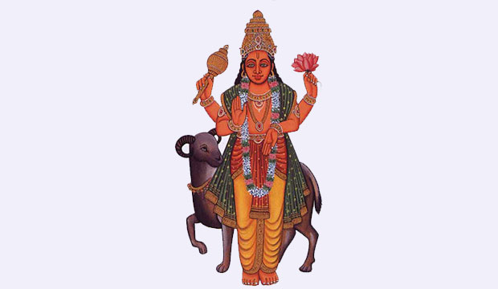

Mangal Puja - Worship of the Mars God
Mangal Puja: Worship of the Mars God
Mangal Puja is a sacred Hindu ritual dedicated to the worship of Mangal, the Mars God, believed to bring courage, strength, prosperity, and the removal of obstacles.
What is Mangal Puja?
Mangal Puja is a sacred Hindu ritual dedicated to the worship of Mangal, the Mars God. Mangal represents strength, courage, vitality, and energy. Worshipping Mangal is said to enhance power, remove obstacles, and bring success in various aspects of life.
Why Do We Perform Mangal Puja?
- Strength and Courage: Mangal Puja is believed to provide the worshipper with inner strength and courage to face challenges.
- Overcoming Obstacles: Removes negative influences and clears the path for success.
- Astrological Benefits: Mitigates the negative effects of the Mars' position in one's birth chart.
- Wealth and Prosperity: Brings financial stability, abundance, and material success.
- Health Benefits: Known to improve energy levels and provide vitality for physical well-being.
Benefits of Mangal Puja
- Increased Strength: Provides physical and mental strength to the devotee.
- Positive Energy: Clears negative energy and brings positivity into the home or workplace.
- Improved Prosperity: Ensures financial stability, wealth, and abundance.
- Health and Vitality: Assists in maintaining good health and overcoming health issues related to energy levels.
- Success in Endeavors: Brings success in business, career, and personal life.
How to Perform Mangal Puja (Step-by-Step)
Mangal Puja is best performed on Tuesdays or during the time when Mars is in a favorable position in the birth chart. Here's a step-by-step guide:
- Preparation: Set up a clean, quiet place, and gather required items such as water, red flowers, incense, and an idol or photo of Lord Mangal.
- Meditation: Sit calmly, facing a source of light, and focus on your breath to prepare your mind for the ritual.
- Offer Water (Arghya): Hold a vessel of water, chant the Mangal mantra, and offer the water to Mangal.
- Chant Mangal Mantras: Recite mantras like "Om Mangalaya Namaha" and the Gayatri Mantra 108 times using prayer beads (mala).
- Offer Flowers and Incense: Offer fresh red flowers and light incense while continuing your prayers.
- Perform Prayers: Close your eyes and pray for strength, prosperity, and the removal of obstacles.
- Conclude the Puja: Bow down to Lord Mangal and perform Aarti (light a lamp and move it in a circular motion).
- Prasad (Offering): Consume or distribute prasad (such as sweets or fruits) after completing the ritual.
- Consistency: Perform Mangal Puja regularly, preferably every Tuesday or during the favorable position of Mars.
Conclusion
Mangal Puja is a significant spiritual practice in Hinduism that brings numerous benefits, including increased strength, prosperity, and success. By performing Mangal Puja regularly, you can harness the divine energy of Mars to overcome obstacles and bring positive changes into your life.